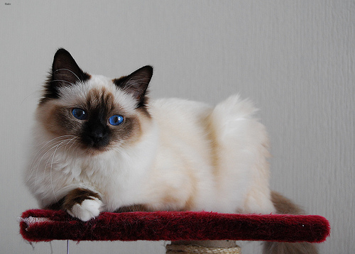
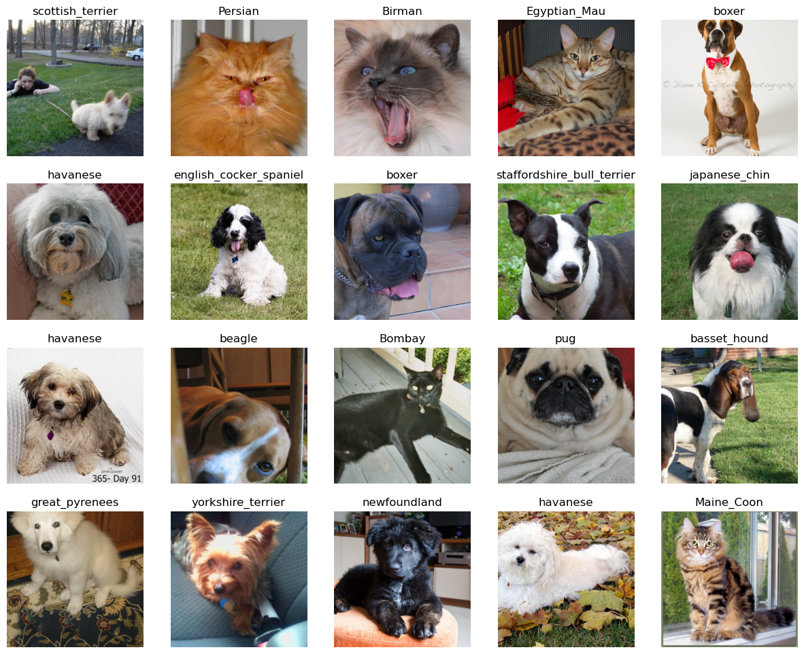

from fastai.vision.all import *path = untar_data(URLs.PETS)
path.ls()
100.00% [811712512/811706944 11:03<00:00]
(#2) [Path('/home/awesomeville/.fastai/data/oxford-iiit-pet/annotations'),Path('/home/awesomeville/.fastai/data/oxford-iiit-pet/images')](path/'images').ls()[0]Path('/home/awesomeville/.fastai/data/oxford-iiit-pet/images/Birman_115.jpg')img_path = (path/'images').ls()[0]
PILImage.create(img_path)
img_paths = [path for path in (path/'images').ls() if path.suffix=='.jpg']
print(len(img_paths))
sizes = pd.Series(PILImage.create(img_path).shape for img_path in img_paths)
sizes.value_counts()7390(375, 500) 1425
(333, 500) 1072
(500, 375) 511
(500, 333) 509
(225, 300) 266
...
(300, 221) 1
(180, 272) 1
(398, 400) 1
(480, 383) 1
(211, 300) 1
Name: count, Length: 1022, dtype: int64def get_label(img_path):
img_name = img_path.name
x = img_name.split('.')[0]
return '_'.join(x.split('_')[:-1])labels = pd.Series(get_label(img_path) for img_path in img_paths)
labels.value_counts()Birman 200
leonberger 200
Bombay 200
japanese_chin 200
saint_bernard 200
Ragdoll 200
Persian 200
english_setter 200
havanese 200
great_pyrenees 200
Bengal 200
basset_hound 200
Egyptian_Mau 200
american_pit_bull_terrier 200
american_bulldog 200
english_cocker_spaniel 200
newfoundland 200
shiba_inu 200
samoyed 200
miniature_pinscher 200
german_shorthaired 200
British_Shorthair 200
pomeranian 200
yorkshire_terrier 200
chihuahua 200
Sphynx 200
beagle 200
keeshond 200
boxer 200
Maine_Coon 200
pug 200
Russian_Blue 200
Abyssinian 200
wheaten_terrier 200
Siamese 200
scottish_terrier 199
staffordshire_bull_terrier 191
Name: count, dtype: int64x_tfms = [PILImage.create, Resize(350), ToTensor()]
categories = Categorize(vocab=labels.unique())
y_tfms = [Transform(get_label), categories]
dsets = Datasets(img_paths, [x_tfms, y_tfms])dls = dsets.dataloaders(bs=32)
dls.show_batch(max_n=20, ncols=5)
dsets = dsets = Datasets(img_paths, [x_tfms, y_tfms], splits=RandomSplitter()(img_paths))
def get_dls(bs, augs):
return dsets.dataloaders(bs=bs, after_batch=[IntToFloatTensor(), *augs])Baselines
Dumb baseline
n_classes = len(categories.vocab)
1/n_classes0.02702702702702703Input independent baseline
class ConvBlock(nn.Sequential):
def __init__(self, ni, nf, stride=2):
super().__init__(nn.Conv2d(ni, nf, 3, stride=stride), nn.ReLU())class CNN(nn.Sequential):
def __init__(self, n_classes, channels=[3,16,32,64,128,256]):
cnn_layers = [ConvBlock(ni, nf) for ni, nf in zip(channels, channels[1:])]
pooling = nn.Sequential(nn.AdaptiveAvgPool2d(1), nn.Flatten())
super().__init__(
*cnn_layers, pooling,
nn.Linear(channels[-1], n_classes)
)model = CNN(len(categories.vocab))
modelCNN(
(0): ConvBlock(
(0): Conv2d(3, 16, kernel_size=(3, 3), stride=(2, 2))
(1): ReLU()
)
(1): ConvBlock(
(0): Conv2d(16, 32, kernel_size=(3, 3), stride=(2, 2))
(1): ReLU()
)
(2): ConvBlock(
(0): Conv2d(32, 64, kernel_size=(3, 3), stride=(2, 2))
(1): ReLU()
)
(3): ConvBlock(
(0): Conv2d(64, 128, kernel_size=(3, 3), stride=(2, 2))
(1): ReLU()
)
(4): ConvBlock(
(0): Conv2d(128, 256, kernel_size=(3, 3), stride=(2, 2))
(1): ReLU()
)
(5): Sequential(
(0): AdaptiveAvgPool2d(output_size=1)
(1): Flatten(start_dim=1, end_dim=-1)
)
(6): Linear(in_features=256, out_features=37, bias=True)
)dls = get_dls(32, augs=[Resize(112)])
learn = Learner(dls, model, loss_func=nn.CrossEntropyLoss(), opt_func=SGD, metrics=accuracy)learn.fit(n_epoch=10, lr=1e-2)| epoch | train_loss | valid_loss | accuracy | time |
|---|---|---|---|---|
| 0 | 3.213014 | 3.190797 | 0.132612 | 01:16 |
| 1 | 3.206754 | 3.148360 | 0.140731 | 01:14 |
| 2 | 3.180439 | 3.131312 | 0.144790 | 01:14 |
| 3 | 3.182761 | 3.117996 | 0.156292 | 01:15 |
| 4 | 3.151093 | 3.126581 | 0.147497 | 01:20 |
| 5 | 3.141126 | 3.100927 | 0.146143 | 01:16 |
| 6 | 3.129682 | 3.087976 | 0.153586 | 01:14 |
| 7 | 3.116964 | 3.111846 | 0.148173 | 01:13 |
| 8 | 3.116793 | 3.077790 | 0.154939 | 01:14 |
| 9 | 3.121727 | 3.063863 | 0.152909 | 01:15 |